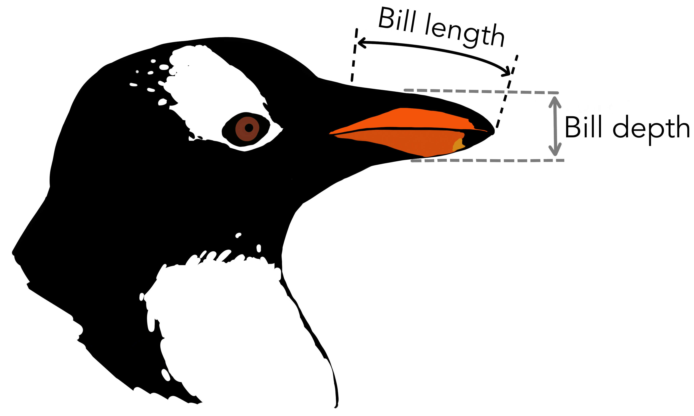
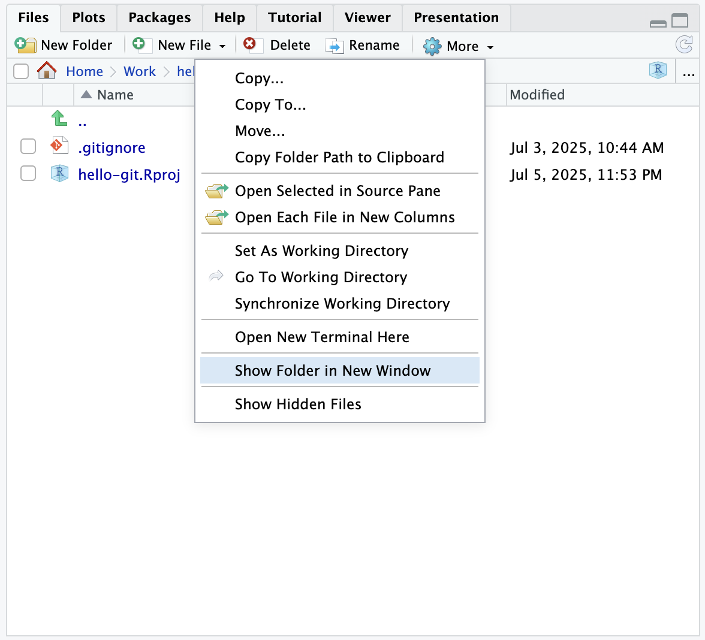
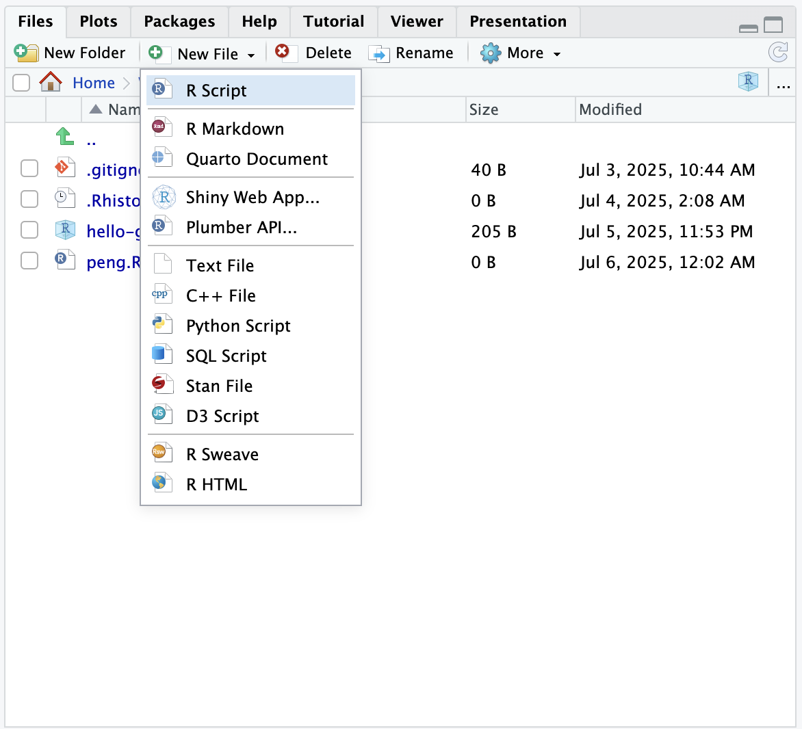
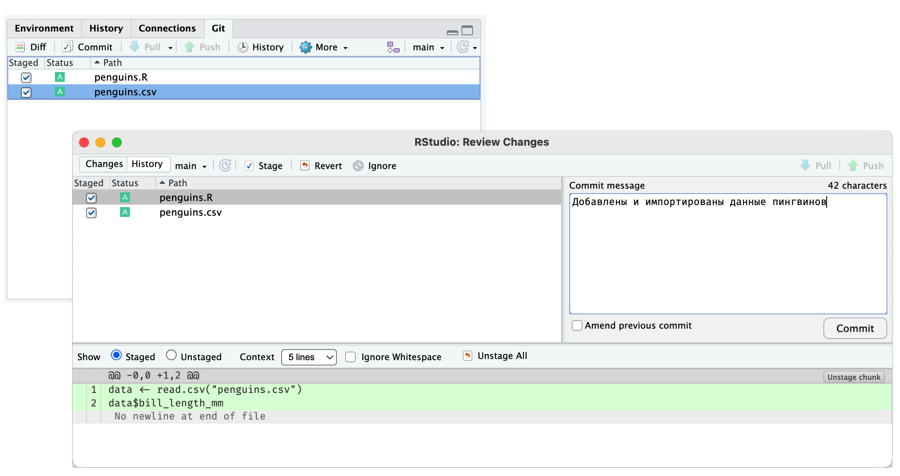

Глава 7 Рабочий процесс
В предыдущем разделе мы разобрали, как зафиксировать изменения в файлах, создав коммит (версию).
При работе с Git это необходимо делать регулярно. Мы начинаем работу с некоторой фиксированной версией анализа, которая работает понятно и предсказуемо. Список изменений пуст. В ходе работы мы вносим изменения в файлы. Выполнив очередной шаг, мы отмечаем нужные изменения для фиксации (коммита), а ненужные убираем. Проверяем содержимое и создаем коммит. Получилась очередная рабочая версия и чистый список изменений относительно нее.

Анализ данных хорошо укладывается в этот процесс, потому что легко разделяется на шаги. Шаги превращаются в коммиты, которые можно проконтролировать, вернуться к ним или поделиться с другими участниками.
Попробуем на практике — проанализируем длину клюва пингвина.

Скачайте файл с данными penguins.csv и положите в папку проекта. Для этого откройте папку в файловом менеджере или воспользуйтесь меню на панели Files в RStudio More → Show Folder in New Window

Обратите внимание, что файл penguins.csv появился на панели Git в RStudio.
Теперь создадим скрипт для анализа. Для этого на панели Files выберите в меню New File → R Script и введите название файла penguins.R

Введите следующий код и сохраните файл:
data <- read.csv("penguins.csv")
data$bill_length_mmЗапустите код и убедитесь, что он работает. Убедитесь, что оба файла появились на панели Git. Отметьте их и создайте коммит. Подробную инструкцию см. в предыдущей главе.

После создания коммита убедитесь, что список измененных файлов на панели Git пуст.
Начиная работать с новыми данными, хорошая идея первым делом исследовать их при помощи графика. Построим гистограмму (несколько вариантов с разной шириной столбца). Перепишите скрипт следующим образом:
data <- read.csv("penguins.csv")
x <- data$bill_length_mm
hist(x, breaks = seq(40, 60, 4))
hist(x, breaks = seq(40, 60, 2))
hist(x, breaks = seq(40, 60, 1))Сохраните файл. Обратите внимание, что он снова появился в списке измененных файлов на панели Git. Отметьте его, проверьте изменения и создайте новый коммит. Не забудьте убедиться, что измененная версия скрипта работает.
Ширина столбца 2 подходит лучше всего. Такую гистограмму можно и опубликовать. Для этого сохраним изображение в файл. Перепишите скрипт следующим образом:
data <- read.csv("penguins.csv")
x <- data$bill_length_mm
png("penguins-hist.png")
hist(x, breaks = seq(40, 60, 2))
dev.off()Сохраните скрипт. Выполните код. Обратите внимание, что на панели Git в списке файлов появился файл с изображением penguins-hist.png. Его мы тоже добавим в коммит.
Во-первых, это позволит другим участникам ознакомиться с результатами без необходимости запускать скрипт.
Во-вторых, позже вы можете изменить ширину столбца, тогда удобно будет сравнить результат.
Отметьте оба файла и создайте коммит.
Делайте коммиты часто. Не придавайте слишком большое значение планированию. Коммит это не новая версия вашего анализа, а просто некоторые изменения или шаг, которые вы хотите зафиксировать. При необходимости можно объединить несколько коммитов в один (см. в разделе с решением частых задач).
Не обязательно добавлять в коммит все измененные файлы сразу (или отменять изменения) — они могут оставаться в рабочей папке сколько угодно. Тем не менее старайтесь не копить изменения, потому что тогда версия, зафиксированная в Git, и версия, с которой вы работаете, будут отличаться, а значит, теряется смысл системы контроля версий. Вы всегда можете просмотреть, какие файлы были изменены, и при необходимости отменить изменения в следующем коммите.
Итак, мы выполнили несколько шагов анализа данных. Давайте посмотрим на сделанные изменения с помощью средств Git.
———
Вопрос 1: Сколько файлов вы видите на панели Git?
(Вопрос, чтобы засинкаться, что все идет по плану)
- Нет файлов
- Один - последний измененный
- Два - файлы, которые меняли в этой главе
- Много - Все те же файлы, что в папке
Вопрос 2: Сколько коммитов было сделано в этой главе?
- Один
- Три
- Пять
- Больше пяти
(Так себе название главы.)